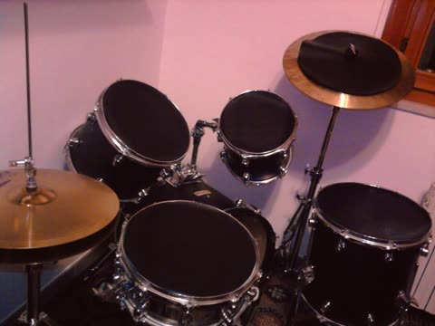

Test 04 · 鼓点音频：指定音轨能不能驱动画面
给 H3 Max 一段真实鼓组录音，用 target_audio 指定为成片音轨，看画面里的击鼓动作能不能跟上鼓点。
测什么、怎么测
输入是一段 8.781 秒的鼓组录音，请求 9 秒、768P。参考组和对照组用同一张鼓组照片和成对的种子，参考组多给 target_audio。音轨用波形和 RMS 包络与输入做互相关；画面卡点从录音的五个声起时刻附近逐帧查看。

Prompt 原文
A cinematic performance video of a professional drummer playing an energetic drum solo on a dark concert stage. The drummer's arm movements, drumstick impacts, cymbal vibrations, and body movements should precisely follow the rhythm and timing of the provided audio. The camera alternates naturally between a medium shot of the drummer and close-ups of the drumsticks hitting the snare and cymbals. Dramatic concert lighting, realistic physical interactions, synchronized motion, detailed instrument textures, professional music video cinematography.
汇总
| 条件 | 完成 | 实际规格 | 实测时长（秒） | 端到端（秒） | 单条估算（USD） |
|---|---|---|---|---|---|
| H3 Max · 指定目标音轨 | 3／3 | 1344x768 @ 24 | 9.440 | 40–57 | 0.76 |
| H3 Max · 对照（无音轨输入） | 3／3 | 1344x768 @ 24 | 9.440 | 39–128 | 0.76 |
| 条件 | 波形相关（最大） | RMS 包络相关 | 偏移 |
|---|---|---|---|
| 指定目标音轨 | 0.9997（3／3） | 1.0000 | 0 ms |
| 对照 | 0.04–0.05 | 0.08–0.12 | −994 ~ 228 ms |
结论与建议
- 音轨被原样保留。参考组三条与输入录音的波形相关 0.9997、零偏移——成片里放的就是这段录音，对照组则是模型自己生成的另一段鼓声。
- 但“音轨对了”不等于“画面卡点”。声起时刻附近能看到抬棒到下挥的变化，可鼓棒和鼓面的接触被运动模糊和机位遮挡，没法逐击确认同步。
- 参考图会被插回画面。第 2 对两组都在约 1.7 秒和 7.1 秒跳回参考照片里的粉墙空鼓组，舞台上的鼓手消失、出现悬空的鼓棒——人物和场景的连续性明显被打断。
- 建议：
target_audio适合“这段视频必须配这段音乐”的场景；要动作精确卡拍，目前还得后期对位或换用专门的 Audio-to-Video 接口（只在 fal 原生平台提供，这次没有测）。参考图最好不要和成片场景差别太大，否则可能被直接插入。
- 逐击音画同步没有人工逐帧核对。
- fal 原生平台的 LTX Audio-to-Video 需要另一套凭据，没有对照样片。
全部样片
第 1 对 · 指定音轨 vs 对照
黑衬衣鼓手、蓝色舞台灯、浅色鼓壳连贯，后段8.25s附近切到鼓棒/鼓面特写。输入声起候选1.80/2.90/5.04/7.18s的邻帧可见抬棒到下挥的变化；触点受运动模糊和机位遮挡影响，8.24s候选跨切镜，不能逐击确认精确同步。
下载原片黑西装鼓手和蓝色舞台连贯，后段推进至近处鼓面；各输入声起候选邻帧都有击鼓姿态，但它的自生成音轨与输入音轨不匹配，不能以这些候选判断本片自己的音画同步。
下载原片第 2 对（两组都跳回参考图）
主要黑色舞台鼓手与鼓面特写可见，但1.708–1.792s及7.083–7.250s回到粉墙空鼓组参考图构图；无人鼓组上出现悬空/无主鼓棒，随后又返回舞台。人物、场景和物理因果存在明显跳变。2.90/5.04s邻帧有下挥，不能据此宣布整段精确同步。
下载原片阶段性切入侧向鼓手与镲片特写，但1.708–1.792s及6.0s标准抽帧、7.083–7.250s邻帧显示粉墙空鼓组，舞台人物暂时消失。存在参考图与演奏场景交替的连续性问题；对照音轨不匹配输入，声起邻帧仅供共同时间点观察。
下载原片第 3 对
耳机鼓手、棕色鼓组和暗背景贯穿抽帧，机位逐渐靠近；1.80/2.90/5.04/7.18s附近棒从高处转至低处，动作候选与声起接近。未出现鼓面清晰可定位的逐击接触，故保留同步判断。
下载原片棕色鼓组、黑衬衣鼓手与暗舞台贯穿抽帧，机位渐近；输入候选附近有可见击鼓动作，2.90/5.04s附近低棒姿态变化较小。输入音轨相关很低，不能证明它跟随输入录音。
下载原片